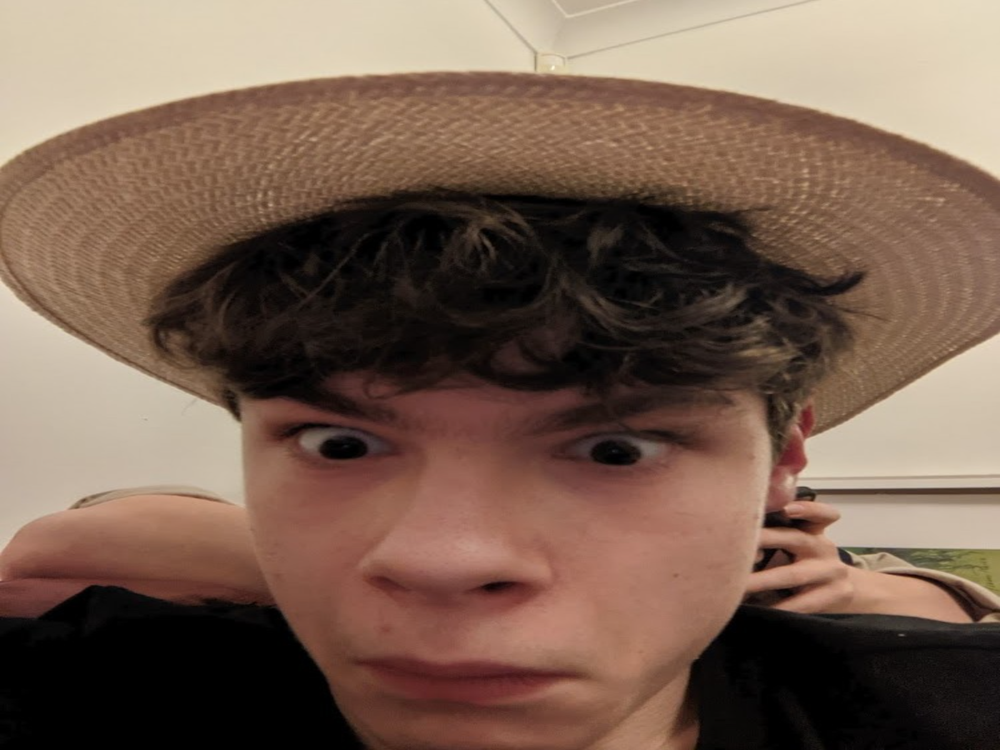
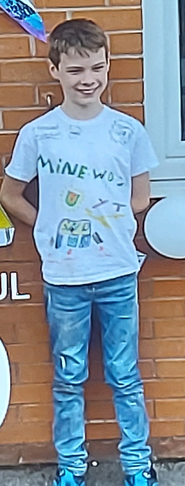

Streaming Schedule
Thursday, Friday, Saturday, and Monday, 8pm to 11pm UK time.
From October to December, there is also a seasonal Sunday Movie Night where viewers choose the film.
Minewdjhu Studios is the company built around it - the rights, the tools, and the team that keeps it running. This page covers both the story and the studio.

Minewdjhu's content has always leaned on personality over polish - the same reactive, self-deprecating energy and a chat that gets treated like part of the cast, whatever game happens to be on that day. Here's how it started.
Jack starts filming on an old camera under the name minewdjh, calling the videos Jackumentaries.
After losing his old Roblox account, Jack rebuilds under a new name - and this time it sticks. Each part of it means something:
MINE was Minecraft, Jack's favourite game at the time - he sank hours into a world called H&H, which he later revisited on stream. W was win, for a belief that everyone's good at their own thing. DJ stands for disc jockey, the job Jack dreamed of doing when he was younger. JH is simply his initials. And U was added at the end on his mum's suggestion.
"I remember when I was upset about losing my account and my mum helped me create another. She decided I could put U at the end of my name, which would stand for Ultimate." - Jack, on choosing the name
Always determined to show off his channel in any way possible, Jack designed, wore, and sold custom merch - even proudly wearing it to his last day of primary school.

Fortnite Gameplay: Episode 1 goes up during the first COVID lockdown, while Jack's in Year 6.
Jack returns with Hang Out & Chat, a fresh start after a hard few months, and decides to put the work in properly this time.
Jack becomes a paid Twitch affiliate partner - three months of consistent streaming, not a lucky break.
Minewdjhu Studios is the parent company behind Minewdjhu. It holds the rights and likeness to the name, and runs the tools, projects, and small team that keep the channel moving day to day.
The Studio also keeps an informal, non-paid partnership with SoundSightUK, a separate Audio Visual company also run by Jack.
Viewer experience is at the heart of what I do. I can have up to ten projects in development at once because I want Minewdjhu to be more than somewhere to watch a stream: I want it to be a place where people can take part, contribute, and feel involved in a community. These projects support that goal, alongside my experiments in software and robotics.
Finds moments from streams, builds each clip around the stream's personality and context, adds captions, and prepares Shorts for YouTube and TikTok. The priority is making clips feel like Minewdjhu, not generic AI content.
Finds the strongest 10 to 40 minutes of a stream using conversation, chat, audio, and discussion, then turns that segment into a titled, described YouTube video. It asks: if someone only watched one part of this stream, what should it be?
Tracks games, tournaments, creator events, updates, and other streaming opportunities, syncing information between my computer and laptop through a cloud system connected to my server. It is designed to help me spot moments worth streaming.
A personal operating system for Minewdjhu that brings projects, streams, goals, tasks, dates, opportunities, content planning, and external events together. Stream Radar is integrated so important opportunities can be surfaced without relying on memory alone.
An operating system concept intended to run on its own hardware, with a desktop, apps, games, MWD services, and deliberately unnecessary Minewdjhu features. It is an experiment in seeing how far a question like “I wonder if I could build that” can go.
A new story project set three years after the original incident, with details being kept under wraps for now. It is planned to be hosted mainly under Minewdjhu Studios and developed in partnership with SoundSightUK, with time taken to get it right.
A fictional Minewdjhu economy with MWD and player-created coins, profiles, leaderboards, achievements, events, changing stock charts, arcades, and casino-style games. It uses usernames and numeric PIN login rather than passwords, does not use real money, and is designed to give the community activities, events, a shop, and reasons to follow project launches.
A deliberately ridiculous Minewdjhu-made GTA-style game with an explorable world, vehicles, missions, characters, police, radio, comedy, and a fully voice-acted cast. Even the sound effects are intended to be made by my own voice, from engines to “pew pew pew”.
A mobile telepresence robot designed to let Yana remotely attend visits to Scotland, move around on specialised tracks, see through a 360-degree VR camera connected to a Meta Quest setup, and communicate with people. Its larger wooden body houses three speakers, with conduit helping keep the wiring secure.
A roughly six-foot humanoid robot based on my Roblox avatar, Mr Robot, with working limbs and fingers. The long-term goal is for it to learn from experience, walk, interact, remember people and context, navigate, and communicate naturally using a broad collection of sensors. The ultimate goal is to make it dance.
Minewdjhu Studios isn't just a brand name; it operates out of a real workshop combining hardware engineering, custom audio design, and custom-coded broadcast pipelines.
Much of the technical work supports Minewdjhu directly: custom software, streaming systems, server infrastructure, electronics, and robotics. Projects are developed around practical needs and experiments that can improve the channel or create new ways for the community to participate.
Behind broadcasts are custom technical pipelines, including stream tools, overlays, and Discord bots. The bots are privately run from Jack's own server and configured with custom commands to support the community and the channel.
MinewdSMP is Jack's privately owned Minecraft server, which he runs, updates, and optimises himself. Its history brings together two earlier Realms into one unified world on a server, with the first Realm dating back nearly three years as of 2026. The world has developed its own shared history through community events, disputes, ceremonies, and ongoing storylines.
MinewdSMP court cases turn player disputes into live, roleplay-driven events. A judge oversees proceedings while a prosecutor presents evidence, the defence responds, witnesses can be heard, and community members can serve as a jury. Screenshots and other records help build cases, and in some trials jurors vote using physical in-game items.
The Case of Star: Star was accused of griefing multiple bases, including William's island, and stealing Shulker boxes containing other players' armour. With Star absent, Charlie presented evidence as prosecutor. The jury voted unanimously guilty, and Star was banned.
The Case of Charlie: The first MinewdSMP court case to feature a practising lawyer, Nic, involved Charlie, who faced accusations involving the death of his horse Dinnerbone, alleged griefing, and restricted items such as bedrock. Prosecutor Yana argued the case, while Charlie and defence lawyer Nic, a practising lawyer, raised the “John Wick clause” and disputed how the rules applied. The outcome was a negotiated one-week banishment from his current zone, requiring him to relocate and establish a new settlement.
Some incidents become longer-running sagas, while others bring the community together for a shared event. Crystal became known for repeated griefing and attempts to return on alternate accounts. No formal conviction took place because repeated incidents, ban evasion, and further damage made immediate moderation more practical than waiting for a trial. The saga remains one part of a much wider community story.
Horsinho the 2nd's funeral: A funeral was held for a horse who had been with the server owner from the beginning. Jack built the church, grave, and portal in four days, adjusting the design to keep it simple and in line with the owner's wishes. Guests arrived in suits and tuxedos, Yana delivered a speech remembering the horse's bravery and love of flowers and open scenery, and attendees placed flowers around the grave or into the coffin. The ceremony mixed sincere remembrance with the server's usual chaotic humour.
Twitch is my preferred place to watch live. YouTube keeps the full streams and edited or segmented VODs available afterwards, while TikTok is home to short clips. The aim is to make it easy to follow along, catch up, and take part in the community.
My preferred viewing platform for live streams, chat, and community events.
Full live VODs, segmented and edited VODs, and Shorts, so you can watch a whole stream or catch the best parts.
Short clips and highlights from streams, made for quick viewing.
Thursday, Friday, Saturday, and Monday, 8pm to 11pm UK time.
From October to December, there is also a seasonal Sunday Movie Night where viewers choose the film.
I use my platforms to support charities through charity streams. During my first charity stream, I had around 550 YouTube subscribers, 70 Twitch followers, and 200 TikTok followers, and raised £75 for the cause.
The point is to use the community for something positive, not just entertainment.
"Streams aren't supposed to be sterile infomercials; they're unscripted, highly flawed hangouts where half the fun is laughing through the tech failures live with chat." - Jack Henderson
Viewer experience is at the heart of the work. I build and maintain multiple projects, sometimes developing up to ten at once, because I want the Minewdjhu community to be somewhere people can do more than watch: they can join in, shape events, follow shared stories, and feel part of something. That includes charity streams that use the audience and platforms to support good causes.
Minewdjhu Studios is run day-to-day by four managers who collectively manage, coordinate, and organise streams.
Builds connections, promotes my content, and manages the social media side of the team.
Organises production, directs money and resources towards streams, and promotes side projects by encouraging engagement and directing people towards them.
Develops ideas for streams, videos, and additional projects that often become final content, while boosting interaction and interest across projects.
Oversees the other managers, assigns tasks, organises the team, keeps me on track, and makes major organisational decisions behind the scenes while remaining technically equal to the other managers.
Questions about Jack, the studio, or these policies can go here.